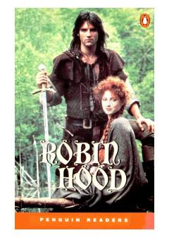

RHRobin Gudning Sherwood o'rmonidagi mashhur sarguzashtlari haqidagi ingliz tilini o'rganuvchilar uchun moslashtirilgan kitob.
Ushbu kitob Robin Gud haqidagi mashhur afsonalarning soddalashtirilgan moslashuvi bo'lib, ingliz tilini o'rganuvchilar uchun mo'ljallangan. Unda Robin Gudning Sherwood o'rmonidagi sarguzashtlari, boylardan olib kambag'allarga yordam berishi va Nottingham sherifi bilan bo'lgan qarama-qarshiliklari hikoya qilinadi.